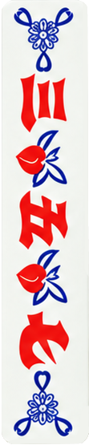

PLAY / 03
出牌规则
先用一页看懂：什么牌重要、怎样凑胡数、怎样从发牌走到和牌。二 四 六 八 九 十13 个牌面，每个各 5 张；乙、九各有 2 张带花边。
01
先认识“精”与“花”
一般场以三、五、七为精牌。它们单张各算 1 胡；带花边的花三、花五、花七各算 2 胡。带花边的乙、九叫黑花，各算 1 胡；其他单张不算胡。
有些牌局会用“五精场”：乙、三、五、七、九都算精牌，单张各 1 胡；这五种的花边牌各 2 胡。若某一种精牌的胡数高于其他精牌，它是“主精”，相关胡数翻倍。
三、五、七为精牌
单张精牌各算 1 胡。
花三、花五、花七
带花边的精牌各算 2 胡。

黑花：花乙、花九
带花边的乙、九各算 1 胡。
别杠
只代花三、花五、花七。

02
胡牌的目标
基础理解可以记成一句话：累计到 17 胡，并且手里只剩一个“缺口”，就具备胡牌条件。缺口是还差一张就能成句，或还差一张就能成坎的两张牌。
句子按精牌和花边黑牌的胡数相加；“上大人”“可知礼”各 1 胡。三张同牌中，自己摸齐的叫坎；四张叫统或招，五张还有再统、开泛、赶踏等进阶情况。
03
一局怎么开始
四人各抓一张，以抓到最大牌的人为庄家。
庄家抓 19 张，闲家各抓 18 张；由庄家上手倒牌后，按逆时针方向依次摸牌。
手里有四张同字牌要先亮出，称为摆龙；有龙不摆，按“烧龙”处理。
轮到自己先摸一张，再出一张；可打单牌、拆口、圆句，也会遇到吃、碰、追口、绍牌等选择。
04
落叫与和牌
当手中已组成足够的整房与口，等待一张牌补齐时，叫“落叫”。常见等牌方式有大碰头、三条口、单钓鱼、四门叫、偏口错与满园滚。实际桌规会因地方和牌友约定而变化，这一页作为入门地图，正式对局以当桌约定为准。